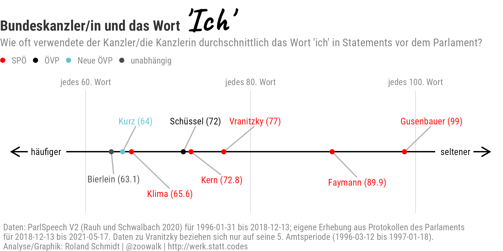
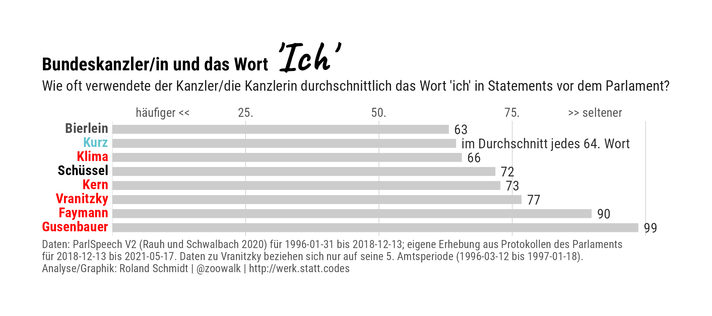
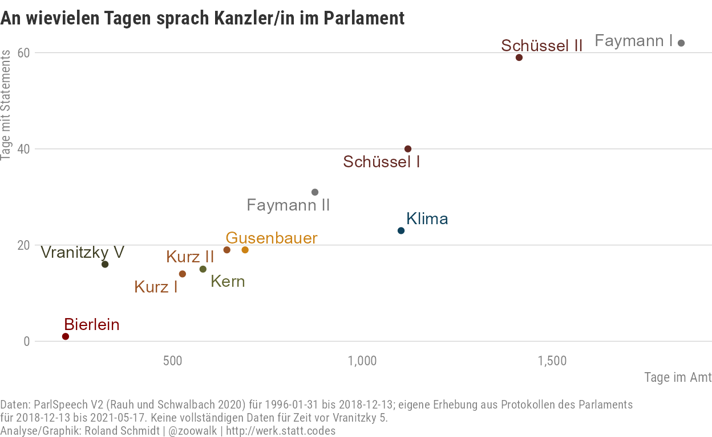
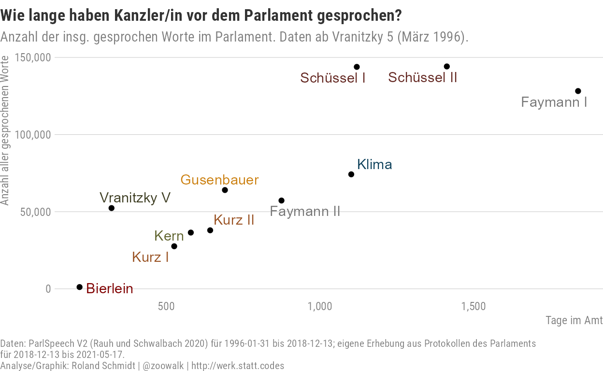
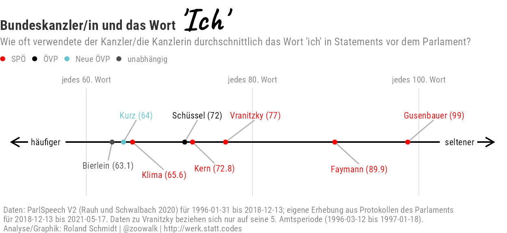
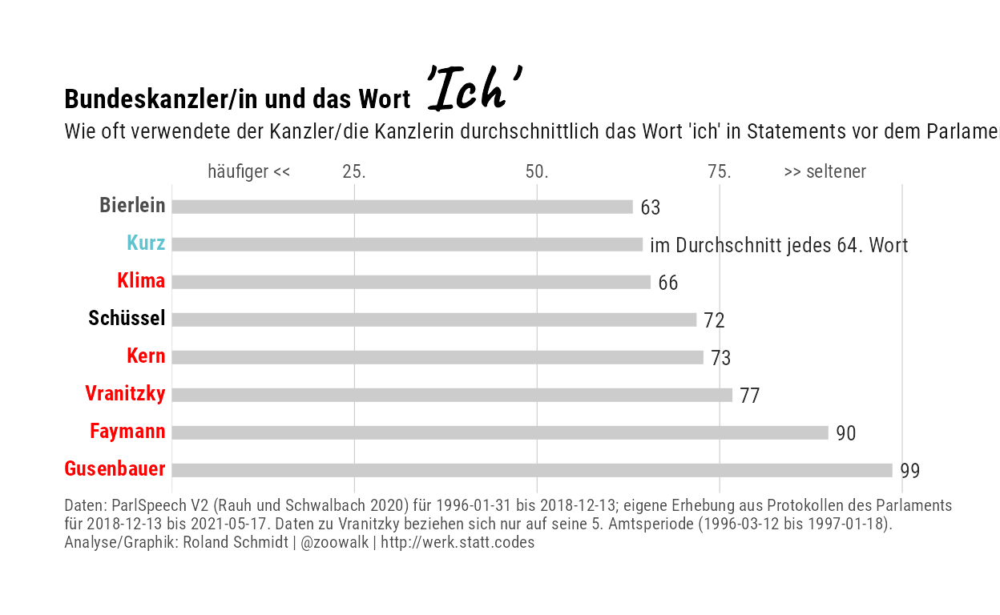

In a previous post, I detailed how to extract statements given in Austria’s parliament from the sessions’ transcripts. In this post, I use the extracted text - in combination with an already existing database on earlier sessions - to compare chancellors’ engagement with parliament and …their use of the word ‘I.’
Plot version 1

Plot version 2

This is another blog post which has populated my draft folder for much too long, and eventually got overtaken by reality. However, in light of the resignation of Austria’s Chancellor Sebastian Kurz, I felt compelled to finalize it.
The former chancellor is, so it is said, a man of many talents. Among them, and one in which he undoubtedly excels, is the ability to present himself in the most favorable light, catch the limelight, and take credit for positive developments (whether the latter are indeed always of his own making is another story). Within this context, former Neos boss Matthias Strolz posted a few months ago with tongue in cheek a tweet announcing that he had successfully enforced on a Friday that the weekend will start on the next day. Hashtag I, I, I (“Ich, Ich, Ich”).
ICH habe durchgesetzt, dass morgen Samstag ist. Und jetzt schönes WE, enk B. #ICHICHICH
— Matthias Strolz (@matstrolz) April 16, 2021
This jokingly phrased tweet with its hashtag made me wonder whether there is actually any empirical evidence for Kurz using the word “I” (ich) more often than others. Around the same time as Strolz’ tweet, I (!) coincidentally stumbled across a relatively new dataset by Christian Rau and Jan Schwalbach (Rauh and Schwalbach 2020). The very impressive ParlSpeech V2 dataset comprises the transcripts of parliamentary speeches of nine states, including Austria. In short, a wonderful source to check for Kurz’s use of the word ‘I’ and contrast it with that of his peers, i.e. previous chancellors.1
Unfortunately though, there’s a catch. For Austria, the ParlSpeech dataset only covers statements made between 15 Jan 1996 and 13 Dec 2018. Consequently, it excludes chancellors prior to Franz Vranitzky, and also only covers a part of the latter’s time in office. Furthermore, and more problematic, the dataset also does not cover the later part of Kurz’s first government (18 Dec 2017 - 28 May 2019) and Kurz’s latest (last?) government (7 Jan 2020 - 11 October 2021).
In order to overcome the latter shortcoming, I digged into the transcripts as provided on the website of Austria’s parliament and extracted all statements given in Parliament, including those of Kurz. While one may rightfully wonder whether the frequency of the word “I” has actually any instrumental, epistemological value, let alone taking it as an indicator for a personality feature, the work to extract all statements was too arduous to simply leave it unused. The instructions on how to extract the statements from Parliament’s transcripts I detailed in this previous post.
| Speeches by chancellors covered by the ParlSpeech dataset and own data | ||||
|---|---|---|---|---|
| gov | office_start | office_end | dataset | scope of analysis |
| Schallenberg | 2021-10-11 | ongoing | own data | not included |
| Kurz II | 2020-01-07 | 2021-10-11 | own data | included |
| Bierlein | 2019-06-03 | 2020-01-07 | own data | included |
| Kurz I | 2017-12-18 | 2019-05-28 | ParlSpeech partly & own data | included |
| Kern | 2016-05-17 | 2017-12-18 | ParlSpeech | included |
| Faymann II | 2013-12-16 | 2016-05-09 | ParlSpeech | included |
| Faymann I | 2008-12-02 | 2013-12-16 | ParlSpeech | included |
| Gusenbauer | 2007-01-11 | 2008-12-02 | ParlSpeech | included |
| Schüssel II | 2003-02-28 | 2007-01-11 | ParlSpeech | included |
| Schüssel I | 2000-02-04 | 2003-02-28 | ParlSpeech | included |
| Klima | 1997-01-28 | 2000-02-04 | ParlSpeech | included |
| Vranitzky V | 1996-03-12 | 1997-01-28 | ParlSpeech | included |
| Vranitzky IV | 1994-11-29 | 1996-03-12 | ParlSpeech partly | not included |
| Vranitzky III | 1990-12-17 | 1994-11-29 | not included | not included |
To eventually obtain a consolidated dataset which also includes Kurz’s statements up to his last day in office and be able to check for the presence of the word “I” the following steps were required:
Get data
Analysis
Below the pertaining code with some comments added inline.
First, let’s get the data contained in the ParlSpeech V2 dataset, which is on Harvard’s dataverse here. As you’ll see, there is a file for each of the nine parliaments. Corp_Nationalrat_V2.rds is the file on Austria we are looking for. The code chunk below makes use of the dataverse package which enables you to directly import files from Harvard’s dataverse.
library(dataverse)
Sys.setenv("DATAVERSE_SERVER" = "dataverse.harvard.edu")
li_parlspeech <- get_dataset("https://doi.org/10.7910/DVN/L4OAKN")
df_parlspeech <- get_dataframe_by_id(fileid = 3758792,
.f=readr::read_rds) %>%
select(date, speaker, text) %>%
mutate(date=lubridate::ymd(date)) %>%
mutate(text=str_trim(text, side="both"))
Let’s only keep the statements by chancellors, and extract their family name.
df_parlspeech_chancellor <- df_parlspeech %>%
filter(str_detect(speaker, regex("^Bundeskanzler(in)?\\b"))) %>%
mutate(name_family=str_extract(speaker, regex("\\w+$")))
Here the first (truncated) statement of every chancellor contained in the ParlSpeech dataset.
library(reactable)
library(reactablefmtr)
df_parlspeech_chancellor %>%
group_by(name_family) %>%
arrange(date, .by_group = T) %>%
slice_head(., n=1) %>%
mutate(text=str_trunc(text,
width=200,
side="right")) %>%
ungroup() %>%
relocate(., name_family, .after=date) %>%
select(-speaker) %>%
arrange(desc(date)) %>%
reactable(.,
defaultColDef = colDef(
width=100),
columns = list(
text=colDef(
width=500
)
),
theme=nytimes())
Before combining the data obtained from the ParlSpeech dataset, we’ve to make sure that there is no overlap in terms of time covered by the two datasets (what would result in duplicates). With a view to ensure this, I’ll take the latest date in the ParlSpeech dataset as a cut-off date. Any observation contained in the data retrieved by me which precedes this cut-off date will be excluded.
date_cut_off_max <- max(df_parlspeech_chancellor$date)
date_cut_off_max
[1] "2018-12-13"Furthermore, let’s check the starting date of the ParlSpeech data.
date_cut_off_min <- min(df_parlspeech_chancellor$date)
date_cut_off_min
[1] "1996-01-31"A look at chancellors’ time in office reveals that the starting date of covered statements is at the end of Vranitzky’s fourth term. Consequently, I only keep his fifth term, for which data on all statements is available. The data on chancellors’ time in office is retrieved from a repository which I had previously created, and based on data published on the parliament’s website.
Now let’s add those statements which were given after the end of ParlSpeech’s coverage (2018-12-13). These statements were previously extracted here and are available for download here.
To directly import the dataset from data.world, where I stored it, I’ll use data.world package.
library(data.world)
dwapi::configure(auth_token=Sys.getenv("data_world_api"))
df_XXVI_XXVII <- data.world::query(
qry_sql("SELECT * FROM df_data"),
dataset = "https://data.world/zoowalk/parlspeeches")
Keep only statements by chancellors made after the end of ParlSpeech’s coverage.
Combine both datasets.
Add details on chancellors’ terms to the data:
#filter out only chancellors
df_chancellors_speeches <- df_chancellors %>%
filter(scope=="included") %>%
mutate(chancellor_name_family=str_extract(name_clean, regex("\\w+$"))) %>%
ungroup() %>%
left_join(., df_all,
by=c("chancellor_name_family"="speaker_name_family")) %>%
#only those observations where speech date is within office period;
#removes duplicates created by left_join; e.g. Kurz, Schüssel, Feaymann have two terms;
filter(date >= office_start) %>%
filter(date <= office_end) %>%
select(-scope, -contains("position"), -name_family) %>%
mutate(office_duration=difftime(office_end, office_start, units=c("days")) %>%
as.numeric())
Add details on party affiliation:
vec_color <- c("SPÖ"="red", "ÖVP"="black", "Neue ÖVP"="#62C3D0", "unabhängig"="grey30")
df_party<- tibble::tribble(
~name, ~party,
"Vranitzky", "SPÖ",
"Klima", "SPÖ",
"Kurz", "Neue ÖVP",
"Schüssel", "ÖVP",
"Bierlein", "unabhängig",
"Gusenbauer", "SPÖ",
"Faymann", "SPÖ",
"Kern", "SPÖ"
)
df_chancellors_speeches <- df_chancellors_speeches %>%
left_join(.,
df_party,
by=c("chancellor_name_family"="name"))
library(paletteer)
df_statement_days <- df_chancellors_speeches %>%
group_by(gov, office_duration) %>%
summarise(n_days=length(unique(date))) %>%
arrange(desc(n_days)) %>%
ungroup() %>%
mutate(n_days_rel=office_duration/n_days) %>%
arrange(n_days_rel)
df_statement_days %>%
mutate(chancellor_name=str_extract(gov, regex("^\\w+"))) %>%
ggplot()+
labs(title="An wievielen Tagen sprach Kanzler/in im Parlament",
# subtitle="An wievielen Tagen gab der Kanzler/die Kanzlerin ein Statement im Parlament?",
caption=glue::glue("Daten: ParlSpeech V2 (Rauh und Schwalbach 2020) für {date_cut_off_min} bis {date_cut_off_max}; eigene Erhebung aus Protokollen des Parlaments \nfür {date_cut_off_max} bis {max(df_all$date)}. Keine vollständigen Daten für Zeit vor Vranitzky 5.\nAnalyse/Graphik: Roland Schmidt | @zoowalk | http://werk.statt.codes"),
# x="Gesamtlänge aller Statements in Anzahl an Wörtern")+
x="Tage im Amt",
y="Tage mit Statements")+
geom_point(aes(
x=office_duration,
colour=chancellor_name,
y=n_days
))+
geom_text_repel(aes(
x=office_duration,
y=n_days,
label=gov,
group=chancellor_name,
colour=chancellor_name))+
scale_y_continuous(label=scales::label_comma())+
scale_x_continuous(label=scales::label_comma())+
scale_color_paletteer_d("ggsci::dark_uchicago")+
theme_post()+
theme(
legend.position = "none",
plot.caption.position = "plot",
axis.title.y = element_text(angle=90,
vjust=1,
hjust=.9))

library(paletteer)
df_statement_length <- df_chancellors_speeches %>%
group_by(gov, office_duration) %>%
summarise(text_length_total=sum(text_length, na.rm=T)) %>%
ungroup() %>%
mutate(text_length_day=text_length_total/office_duration)
df_statement_length %>%
mutate(chancellor_name=str_extract(gov, regex("^\\w+"))) %>%
ggplot()+
labs(title="Wie lange haben Kanzler/in vor dem Parlament gesprochen?",
subtitle="Anzahl der insg. gesprochenen Worte im Parlament. Daten ab Vranitzky 5 (März 1996).",
caption=glue::glue("Daten: ParlSpeech V2 (Rauh und Schwalbach 2020) für {date_cut_off_min} bis {date_cut_off_max}; eigene Erhebung aus Protokollen des Parlaments \nfür {date_cut_off_max} bis {max(df_all$date)}.\nAnalyse/Graphik: Roland Schmidt | @zoowalk | http://werk.statt.codes"),
# x="Gesamtlänge aller Statements in Anzahl an Wörtern")+
x="Tage im Amt",
y="Anzahl aller gesprochenen Worte")+
geom_point(aes(
x=office_duration,
y=text_length_total
))+
geom_text_repel(aes(
x=office_duration,
y=text_length_total,
label=gov,
group=chancellor_name,
colour=chancellor_name))+
scale_color_paletteer_d("ggsci::dark_uchicago")+
scale_y_continuous(label=scales::label_comma())+
scale_x_continuous(label=scales::label_comma())+
# paletteer::scale_color_paletteer_d(palette = "dutchmasters::anatomy")+
theme_post()+
theme(
legend.position = "none",
plot.caption.position = "plot",
axis.title.y = element_text(angle=90,
vjust=1,
hjust=1)
)

df_statement_length %>%
arrange(desc(text_length_day)) %>%
reactable(.,
columns=list(
office_duration=colDef(
name="Tage im Amt"
),
text_length_total=colDef(
name="Summe an insgesamt gesprochener Worte",
format=colFormat(separators = T)
),
text_length_day=colDef(
name="Worte pro Tag",
format=colFormat(digits = 2),
style=color_scales(.,
colors=c("grey", "blue"))
)),
defaultPageSize =11,
theme=nytimes()) %>%
add_title("Anzahl der gesprochenen Worte im Parlament pro Tag im Amt",
font_size=18) %>%
add_subtitle("Daten ab Vranitzky 5 (März 1996).",
font_size=12,
font_weight="normal") %>%
add_source(glue::glue("Daten: ParlSpeech V2 (Rauh und Schwalbach 2020) für {date_cut_off_min} bis {date_cut_off_max}; eigene Erhebung aus Protokollen des Parlaments \nfür {date_cut_off_max} bis {max(df_all$date)}. Daten zu Vranitzky beziehen sich nur auf seine 5. Amtsperiode (1996-03-12 bis 1997-01-18).
Analyse/Graphik: Roland Schmidt | @zoowalk | http://werk.statt.codes"),
font_size=11,
font_weight = "normal",
font_color = "#999999",
font_family = "Helvetica",
align="left")
Daten: ParlSpeech V2 (Rauh und Schwalbach 2020) für 1996-01-31 bis 2018-12-13; eigene Erhebung aus Protokollen des Parlaments für 2018-12-13 bis 2021-05-17. Daten zu Vranitzky beziehen sich nur auf seine 5. Amtsperiode (1996-03-12 bis 1997-01-18). Analyse/Graphik: Roland Schmidt | @zoowalk | http://werk.statt.codes
A few things stood out for me here: First, Chancellor Schüssel, who is occasionally remembered as the “Chancellor of Silence” (“Schweigekanzler”) was actually quite talkative. In absolute numbers, no other chancellor in the dataset spoke more than Schüssel during his second term. And also his relative numbers are among the top figures. Admittedly, his nickname did not refer to the length of his statements, but rather - if I remember correctly - the (alleged) absence of statements when it came to controversial issues, i.e. statements by his extreme-right coalition partner.
Second, and more related to my point of departure, chancellor Kurz features very low numbers. With the exception of the special case of chancellor Bierlein (caretaker/expert government) no other chancellor had fewer words spoken in parliament, if take the duration of his office into account.
Now let’s focus on the chancellors’ usage of the word ‘I’ (‘ich’). Below the code and comments.
search_term="\\bich\\b"
df_chancellors_speeches <- df_chancellors_speeches %>%
mutate(search_term_n=str_count(text, regex(search_term, ignore_case = T)))
#search term in total per chancellor
df_search_term_n<- df_chancellors_speeches %>%
group_by(chancellor_name_family, party) %>%
summarise(search_term_sum=sum(search_term_n),
text_length_total=sum(text_length)) %>%
ungroup() %>%
mutate(search_term_rel=search_term_sum/text_length_total) %>%
mutate(search_term_rel_inv=1/search_term_rel) %>%
arrange(desc(search_term_rel))
For the sake of clarity, but mainly due to an inability to make up my mind, two plots which depict the same data. Again, with the exception of the special case of Bierlein, no other chancellor used the word ‘I’ more often than Kurz (however, the difference to Klima seems not considerable).
pl_df_search_term_total <- df_search_term_n %>%
mutate(chancellor_name=fct_reorder(chancellor_name_family, search_term_rel_inv))
hrbrthemes::update_geom_font_defaults(family="Roboto Condensed")
library(ggtext)
pl_search_term_total <- pl_df_search_term_total %>%
ggplot()+
labs(title="Bundeskanzler/in und das Wort <span style='font-family:Caveat;color:black;font-size:30pt;'>'Ich'</span>",
# x=c("<< häufiger", "seltener >>"),
subtitle="Wie oft verwendete der Kanzler/die Kanzlerin durchschnittlich das Wort 'ich' in Statements vor dem Parlament?",
caption=glue::glue("Daten: ParlSpeech V2 (Rauh und Schwalbach 2020) für {date_cut_off_min} bis {date_cut_off_max}; eigene Erhebung aus Protokollen des Parlaments \nfür {date_cut_off_max} bis {max(df_all$date)}. Daten zu Vranitzky beziehen sich nur auf seine 5. Amtsperiode (1996-03-12 bis 1997-01-18).\nAnalyse/Graphik: Roland Schmidt | @zoowalk | http://werk.statt.codes"))+
geom_segment(x=51, xend=109,
y=0, yend=0,
color="black",
size=0.5,
linejoin = "mitre",
arrow=arrow(length=unit(0.3, "cm"),
ends="both"))+
geom_label(x=53, #52
y=0, #0
label="häufiger",
size=3,
color="black",
fill="white",
fontface="plain",
label.size=0,
hjust=0,
check_overlap = T)+
geom_label(x=107,
y=0,
label="seltener",
label.size=0,
size=3,
family="Roboto Condensed",
fontface="plain",
color="black",
fill="white",
hjust=1,
check_overlap = T
)+
ggrepel::geom_text_repel(
data=. %>%
arrange(search_term_rel_inv) %>%
filter(row_number()%%2==1),
aes(
y=0,
x=search_term_rel_inv,
color=party,
label=paste0(str_extract(chancellor_name, regex("\\w+$")), " (",
round(search_term_rel_inv, digits = 1),")")),
# nudge_y = 0.5,
hjust=0,
size=3,
nudge_y = -.1,
family="Roboto Condensed",
angle=0,
segment.color="grey70",
show.legend = F)+
ggrepel::geom_text_repel(
data=. %>%
arrange(search_term_rel_inv) %>%
filter(row_number()%%2==0),
aes(
y=0,
x=search_term_rel_inv,
color=party,
label=paste0(str_extract(chancellor_name, regex("\\w+$")), " (",
round(search_term_rel_inv, digits = 0),")")),
force_pull = 0,
nudge_y = .1,
family="Roboto Condensed",
hjust=0,
size=3,
angle=0,
segment.color="grey70",
show.legend = F
)+
geom_point(aes(
y=0,
x=search_term_rel_inv,
color=party,
fill=party),
stat="identity")+
scale_color_manual(values=vec_color)+
# scale_fill_viridis_d(option="D")+
scale_x_continuous(limits=c(50, 110),
breaks=seq(60, 100, 20),
expand=expansion(mult=c(0.00,0.01)),
labels=function(x) glue::glue("jedes {x}. Wort"),
position = "top")+
scale_y_continuous(limits=c(-.4,.4),
expand=expansion(mult=0))+
# hrbrthemes::theme_ipsum_rc()+
theme_post()+
coord_cartesian(ylim=c(-.2,.2))+
guides(color=guide_legend(title=NULL,
label.theme = element_text(size=8,
margin=margin(l=0, unit="cm"),
family="Roboto Condensed",
color="grey50")),
fill=guide_none())+
theme(legend.position="top",
legend.direction = "horizontal",
legend.text.align = 0,
legend.justification = "left",
legend.margin = margin(l=0, t=0, unit="cm"),
legend.box.margin = margin(l=-0.3, t=0.25, unit = "cm"),
panel.grid.major.y = element_blank(),
panel.grid.minor.y = element_blank(),
panel.grid.major.x = element_line(),
# panel.grid.minor.x = element_blank(),
plot.title = element_markdown(),
plot.title.position = "plot",
plot.subtitle = element_text(size=rel(2),
family="Roboto Condensed",
margin=margin(b=0, unit="cm")),
plot.caption = element_text(face="plain",
family="Roboto Condensed",
hjust=0),
axis.ticks.length.x.bottom = unit(.3, units="cm"),
axis.text.x=element_text(size=8,
margin=margin(t=0, b=0, unit="cm")),
axis.title.x = element_blank(),
axis.text.y = element_blank(),
axis.title.y = element_blank())

library(ggtext)
#vec_color %>% enframe(., name="party", value="party_color")
pl_search_term_total_2<- pl_df_search_term_total %>%
left_join(., vec_color %>% enframe(., name="party", value="party_color")) %>%
mutate(chancellor_name_md=glue::glue("<span style='color:{party_color}'>{chancellor_name}</span>")) %>%
mutate(chancellor_name_md=fct_reorder(chancellor_name_md, search_term_rel_inv) %>%
fct_rev()) %>%
# select(chancellor_name_md)
ggplot()+
labs(title="Bundeskanzler/in und das Wort <span style='font-family:Caveat;color:black;font-size:30pt;'>'Ich'</span>",
# x=c("<< häufiger", "seltener >>"),
subtitle="Wie oft verwendete der Kanzler/die Kanzlerin durchschnittlich das Wort 'ich' in Statements vor dem Parlament?",
caption=glue::glue("Daten: ParlSpeech V2 (Rauh und Schwalbach 2020) für {date_cut_off_min} bis {date_cut_off_max}; eigene Erhebung aus Protokollen des Parlaments \nfür {date_cut_off_max} bis {max(df_all$date)}. Daten zu Vranitzky beziehen sich nur auf seine 5. Amtsperiode (1996-03-12 bis 1997-01-18).\nAnalyse/Graphik: Roland Schmidt | @zoowalk | http://werk.statt.codes"))+
geom_segment(aes(
y=chancellor_name_md,
yend=chancellor_name_md,
x=0,
xend=search_term_rel_inv,
group=chancellor_name_md),
size=3,
color="grey80"
)+
geom_text(data=. %>% filter(!str_detect(chancellor_name, "Kurz")),
aes(
y=chancellor_name_md,
x=search_term_rel_inv,
#color=search_term_rel_inv,
label=round(search_term_rel_inv, 0)),
nudge_x = 1,
size=3.5,
hjust=0,
face="bold"
)+
geom_text(data=. %>% filter(str_detect(chancellor_name, "Kurz")),
aes(
y=chancellor_name_md,
x=search_term_rel_inv,
#color=search_term_rel_inv,
label=glue::glue("im Durchschnitt jedes {round(search_term_rel_inv, 0)}. Wort")),
nudge_x = 1,
size=3.5,
hjust=0,
face="bold"
)+
#scale_y_discrete(label=function(x) stringr::str_extract(x, regex("\\S+$")))+
scale_x_continuous(expand=expansion(mult=c(0, 0.05)),
breaks = seq(0, 100, 25),
labels=c(" häufiger <<", seq(25,75,25) %>% paste0(., "."),">> seltener "),
position = "top",
sec.axis = dup_axis()
)+
scale_color_gradient()+
hrbrthemes::theme_ipsum_rc()+
theme(panel.grid.major.y = element_blank(),
panel.grid.minor.y = element_blank(),
panel.grid.minor.x = element_blank(),
plot.title = element_markdown(margin=margin(b=0),
size=13),
plot.title.position = "plot",
plot.subtitle = element_text(size=rel(.9),
margin = margin(
t=0,
b=0.3, unit="cm"),
color="grey10"),
plot.caption = element_text(color="grey30",
margin=margin(t=0, unit="cm"),
size=8,
hjust=0),
plot.caption.position = "plot",
axis.text.x.top = element_text(size=9,
color="grey30",
margin=margin(b=0,
t=0,
unit="cm")),
axis.text.x.bottom = element_blank(),
# axis.title.x.top = element_text(hjust=c(0, 1),
# color="grey30"),
axis.title.x.top = element_blank(),
axis.title.x.bottom = element_blank(),
axis.title.y=element_blank(),
axis.text.y = element_markdown(size=10, face="bold")
)

So that’s it. If the above results are not profoundly meaningful (or maybe they are?), I found them at least somewhat entertaining. As always, if you spot any error, have a question etc. feel free to contact me, best via twitter direct message.
Obviously, a chancellor’s speeches in Parliament are only one part of his/her overall corpus of statements. It could be that answers in Parliament are formulated differently than those outside when it comes to the use of the word ‘I.’↩︎
Text and figures are licensed under Creative Commons Attribution CC BY-NC-SA 4.0. The figures that have been reused from other sources don't fall under this license and can be recognized by a note in their caption: "Figure from ...".
For attribution, please cite this work as
Schmidt (2021, Nov. 23). werk.statt.codes: How often do Austria's Chancellors use the word 'I'. Retrieved from https://werk.statt.codes/post/2021-04-22-how-often-do-austrias-chancellors-use-the-word-i/
BibTeX citation
@misc{schmidt2021how,
author = {Schmidt, Roland},
title = {werk.statt.codes: How often do Austria's Chancellors use the word 'I'},
url = {https://werk.statt.codes/post/2021-04-22-how-often-do-austrias-chancellors-use-the-word-i/},
year = {2021}
}